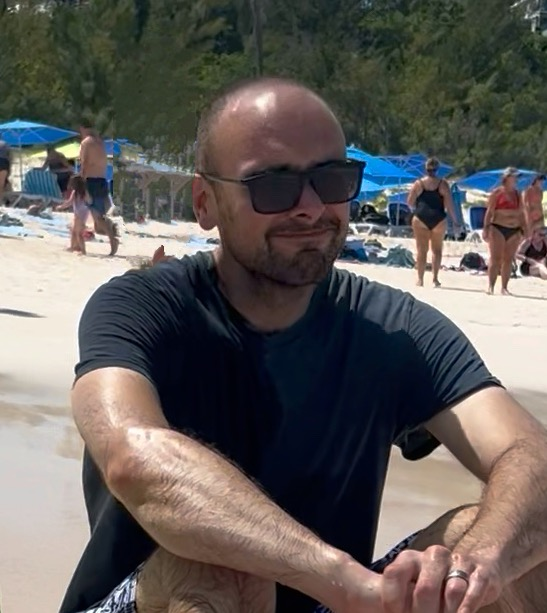
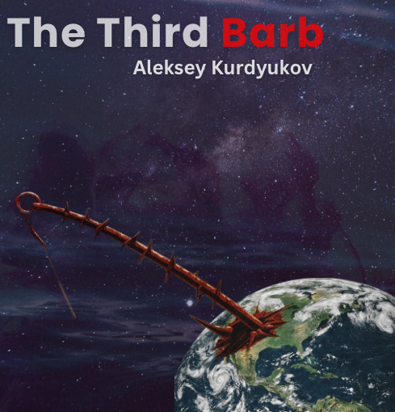

Writing Projects

Since I was very little, I've been drawn to storytelling—shaping make-believe characters, exploring their actions, emotions, and how they change themselves and the world around them. One of my earliest memories is of my mother reading The Hobbit and The Lord of the Rings trilogy in Russian to me and my sister, over and over again. I was in awe that adults, too, crave that sense of adventure and wonder.
Later, during hikes in the Catskills of New York State, my great uncle—a mathematician—would freestyle stories adapted from well-known fables as we trekked across the rugged landscape. Sometimes we looked out over the Hudson River, other times across rolling hills lit with green, orange, and yellow treetops. Each tale he spun was alive with choices, puzzles, and character dilemmas pulled from his wealth of experience.
For a long time, I've thought about this simple, timeless act—telling meaningful stories about characters, places, trials, and heroic decisions—and how it continues to shape the way I see the world and the stories I now tell myself.
Later, during hikes in the Catskills of New York State, my great uncle—a mathematician—would freestyle stories adapted from well-known fables as we trekked across the rugged landscape. Sometimes we looked out over the Hudson River, other times across rolling hills lit with green, orange, and yellow treetops. Each tale he spun was alive with choices, puzzles, and character dilemmas pulled from his wealth of experience.
For a long time, I've thought about this simple, timeless act—telling meaningful stories about characters, places, trials, and heroic decisions—and how it continues to shape the way I see the world and the stories I now tell myself.
| Cover | Project Name | Genre | Type | Status | Started | Word Count |
|---|---|---|---|---|---|---|
|

|
The Third Barb - Prelude | Science Fiction | Serialized Novella | In Progress |
4,200
Target: 5,000
|
|
|
|
The Third Barb - Chapter 1 | Speculative Fiction | Serialized Novella | Backlog |
0
Target: 7,500
|